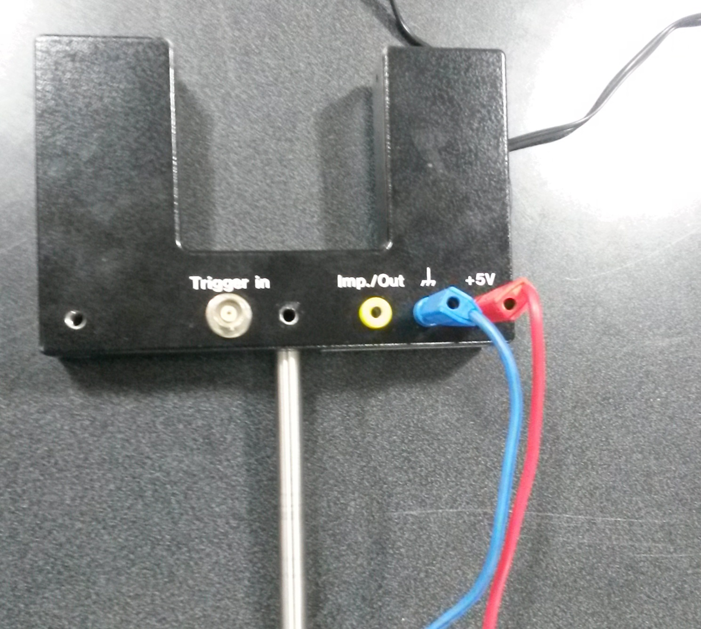

The problem given to me was to design and build equipment for two mechanics experiments:
1) To measure tension in a rotating string
2) To trace trajectory of a particle on a rotating table
To perform these experiments, a motor-driven rotating table controlled by a speed regulator was built.
The primary aim of setting up the table was to use it as a demonstration tool to study fictitious forces.
This was done to comply results with my supervisor's ongoing theoretical study.
The coefficient of friction of the resting surface (here plywood) was calculated.
Supervisor: Dr Toby Joseph, at BITS Pilani, India
Duration: 4 months
PROCESS
PROBLEM ANALYSIS
During the first month, I researched methods and components that I could use to build the rotating table.
CONCEPTUALIZATION
During this phase, I drew table's figures and decided on the workings of each component.
BUILDING
Next, the table was built in the mechanical engineering workshop. The construction was started from bottom to top. First, the angles ( the 4 bent legs) and the square frame was built. The motor was fitted. The flange was joint to the table top.


MATERIALS
TESTING
EXPERIMENT 1
The table top was rotated at a particular angular frequency. The particle (metal piece) was released on the rotating table top so as to locate the maximum distance at which the particle can be placed for it to remain bounded. The theoretical maximum distance and experimental determination of this distance were used as a way to find the coefficient of friction between the particle and the table.
EXPERIMENT 2
In this experiment, the particle was placed on the table which starts rotating. The minimum distance from the centre of the turntable for which the particle begins to slide was calculated.
These experiments presented comparable values of coefficient of friction.
